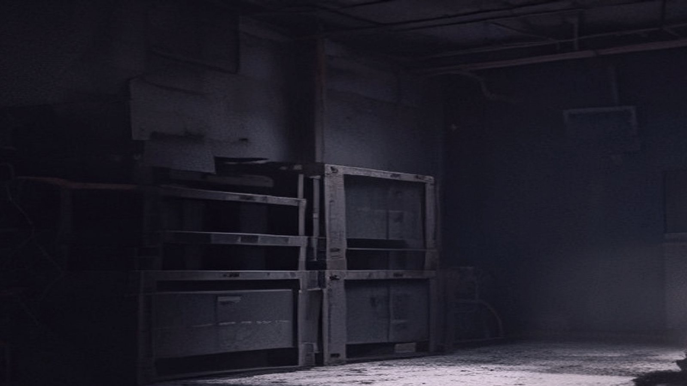
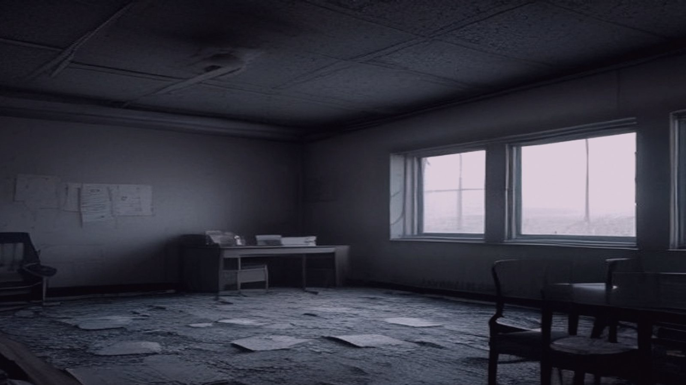

Maren Halloran tightened the screws on the 48-track cart, the hiss of compressed air a familiar comfort. She was here to salvage the audio from last year's observing run, when a freak storm knocked out the power and left the tapes unrecoverable. The radio team had sent them her way, hoping she could work magic with the degraded recordings. She'd flown in for two weeks, promising they'd get their data back by the end of it.
The telescope's control room hummed around her – computers beeping, fans whirring, and the soft whoosh of air conditioning vents. Out the window, the 305-meter dish loomed, its white surface glinting in the morning sun. The observatory was usually deserted during observing runs, but Maren had been assured she'd have all the necessary support from the on-site staff.
As she worked, a tray of stale coffee and yesterday's croissants sat precariously on her desk, a reminder to grab something edible for lunch. Her gaze drifted around the room, taking in the neat rows of consoles, instrument panels, and tangled wires. It was all so... methodical. She focused back on the tapes, rewinding them with a practiced hand.
On the opposite wall, a framed photograph hung slightly askew – one of the team from last year's run, standing proudly in front of the dish. Dr. Patel stood at the center, beaming; his colleagues flanked him, each trying to outsmile the others. One figure, however, stood just off frame to the right, partially occluded by a maintenance cart. Maren barely registered it, too caught up in the hiss of data streaming across her screen.
Maren's gaze lingered on the team photo, her mind half-tracking the faint static as she rewound the tapes. The footsteps above didn't register at first – just a low rumble in the background, like distant engines idling. She tuned it out, too accustomed to the constant hum of machinery.
But then, unmistakable this time: heavy tread overhead, and it was getting louder.
She straightened up, frowning, scanning the room as if something would have changed since she last looked. Consoles still in order, instruments still steady, wires still tangled... All seemed normal.
That's when she noticed Patel's assistant, Rachel, slipping out of the break room with a stack of files.
"Hey, Maren," Rachel said as she passed by, "just getting some documents for Dr. Patel's update meeting. I think he's going to want the data from the morning run."
Maren nodded, distracted, still focused on the ceiling.
"The... uh... the cabling must be settling," she muttered, thinking aloud.
Rachel's expression turned quizzical. "Settling?"
"Some sort of structural stress, I guess. I've heard the old admin building can get a bit wonky."
The footsteps stopped above them.
"Well, that makes sense, then," Rachel said with a shrug, and walked back into the break room to finish her files.
Maren nodded along, trying to shake off the unease. Maybe it was just the echoey halls playing tricks on her ears. Yeah, must be that... She took another deep breath, letting the air fill her lungs as she focused back on the tapes.
And then she felt it: a gentle breeze – almost imperceptible at first – that seemed to seep into the room through the gaps in the consoles. It was just a slight movement of air, nothing more, but it didn't seem to be coming from anywhere in particular...
Maren continued to work on the tapes, trying to isolate the problem. The breeze she'd felt earlier seemed to have dissipated, and she was able to focus again on the hiss of static in the audio. Rachel came back out of the break room with a cup of coffee, and they exchanged a nod as she sat down across from Maren.
The morning sun streamed through the skylights above, casting a warm glow over the consoles. It was going to be a good day. But as Maren's gaze wandered out into the telescope array, she felt a faint... fuzziness. The antennas seemed less defined than usual, their metal surfaces blurring at the edges. She blinked, thinking it was just a trick of the light.
It's just my brain playing tricks on me, she told herself, the sun is shining directly in here.
She turned back to the tapes, trying to ignore the soft feeling of unease spreading through her chest. The breeze had been nothing, and this... this was just her imagination running wild. But as she worked, the fuzziness seemed to spread. The equipment on the walls, the crates stacked against them – everything outside a certain radius began to lose definition.
It's just a little bit of static, Maren thought, _my eyes are tired from staring at the same things for too long.

Maren's hands moved automatically as she worked, her eyes fixed on the tapes spooling out of the machine. She needed to verify the signal strength for Patel's observations tomorrow, but first she had to confirm the antenna alignment. She picked up the comms phone and dialed the control room, letting it ring through.
No answer.
She tried again, frowning. Maybe Patel was still on her break or busy with something. It wasn't unusual for the control room team to be distracted during observing runs. She glanced at her watch: 3:27 p.m., just a little over an hour before sunset. The dry air outside made every creak of the station's wooden beams sound amplified.
She tried Patel again, left a message this time. As she waited for a response, Maren began to set up the weather station loggers to collect data for the evening's forecast. She had to check the equipment was calibrated correctly before the cold front moved in. The anemometer's gentle whine suddenly changed pitch, the wind picking up.
The phone remained silent.
The cold snap was going to be severe, Patel had warned them earlier. Maren shivered, despite her thick sweater. She stepped outside into the bright sunlight, where the air seemed to vibrate with tension. The temperature gauge on the anemometer already read 48 degrees Fahrenheit – it was supposed to drop to 32 tonight.
Everything looked normal in the control room: Patel's notes were neatly stacked on the counter, the monitoring screens displaying steady data streams. Maren checked the internet connection, but her usual bookmarked weather site refused to load. She shrugged it off as a glitch; probably just another minor network hiccup.
The anemometer's whine grew louder, its needle spinning wildly as the wind howled across the desert. The station's wooden beams creaked in rhythm, making Maren's skin prickle. She went back inside, closing the door behind her with a metallic clang that seemed to echo through the room.
Maren's eyes strayed back to the monitoring screens. Patel's notes still sat on the counter, but now they seemed to loom over her like sentinels. She rubbed her temples – a dull ache had been building all morning. The wind outside raged on, its whine piercing through the station's insulation.
This is ridiculous, she thought. A little weather doesn't make it impossible to work.
But as she looked around the control room, the edges of things began to blur. Patel's notes seemed a pixel away from legibility, the screens displaying data streams that now appeared as squiggles on a wet blackboard. Maren's gaze snagged on the anemometer, its needle spinning in frantic arcs – but now it looked like a child's toy stuck in a whirlwind.
The air inside the room was cold, its chill seeping into her bones like a draught from a missing window. She shivered, despite herself. Calm down, she told herself. It's just a minor network issue – but every glance outside, every try to check the internet or weather site, only made things worse.
On her wrist, Maren's watch beeped four times fast. It had been doing that all morning – Patel thought it was just the battery losing sync, but now it seemed almost... deliberate. The time is wrong again. She glanced up at the clock on the wall: 3:27 p.m., just as before. But outside, something had changed. The desert stretched out, a vast expanse of nothingness that seemed to be pulling her in – or pushing her away.
Maren's skin prickled with gooseflesh. The anemometer howled on, its needle shrieking past 120 km/h, but now it sounded like the wind itself was screaming. She took a step back from the screens, her eyes scanning the room for... something. Anything.
And then she saw it: Patel's notes, blown off the counter by some unseen force, scattered across the floor like confetti. The data streams on the monitors had reduced to jumbled characters, each one screaming silently into the void. Maren's heart started to gallop in time with the anemometer's whine.
For a moment, she thought of calling for help – but her hand hesitated over the intercom, her mind locked in place like a scream.
Maren's foot tapped against the floor, hesitant to take another step closer to the scattered notes. The screens behind her continued to scream in digital tongues, the anemometer still shrieking like a banshee outside. She felt the cold seep into her bones, 48 degrees now feeling more like 20.
Her breathing quickened as she scanned the room for any sign of what was happening. The air seemed thick with anticipation, the pressure building behind her eyes like a fist clenched tight. A faint tang of ozone hung in the air, making her skin prickle.

She raised a hand to push her hair back from her face, and that's when she saw it: a single word on the screen, clear as day amidst the jumbled characters. LOCKDOWN. The monitors flickered and died, plunging the room into an faint silence.
Maren's heart thudded in her chest, her lungs burning with every ragged breath. She tried to call out, but her voice caught in her throat like a hairball. Her hand dropped to her side, fingers curling into a fist as she took another step back – and that was when the room shifted.
The concrete beneath her feet seemed to ripple, like a lake hit by a stone. The anemometer's scream faltered, its needle stuttering before it settled on a new, impossible reading: 300 km/h. Maren stumbled, her foot catching on something uneven. She looked down and saw the floor had changed, the concrete cracked open like a mouth.
A cold draught wafted up from the darkness beneath, carrying with it the stench of damp earth and decay. Maren's stomach lurched as she took another step back, her eyes fixed on the void where the floor had been. Her breathing was the only sound now, ragged and panicked as she tried to think what to do next – but there was nothing to think about anymore.
The room was closing in.
Maren's eyes were fixed on the void where the floor had been, her breathing ragged and panicked. She tried to take a step back, but her foot caught on something else, a loose wire snaking out from under the console like a thin snake. It vibrated beneath her weight, making her stumble.
What am I doing? she thought, her mind foggy with fear. I have to get out of here.
She stumbled towards the door, but it wouldn't budge. The handle twisted in her hand, refusing to turn. Panic clawed at her throat as she frantically tried the other doors, but they were all locked down.
The radio room was silent now, the hum of machinery gone. The only sound was Maren's own ragged breathing and the faint hum of something else – a low whine that seemed to be coming from outside.
She stumbled towards the window, but it was frosted over with condensation, obscuring her view. She wiped at it with her sleeve, clearing a patch to see out into the rain-lashed darkness.
And that's when she saw them – a line of vehicles parked along the access road, their headlights casting a faint glow on the wet pavement. A search party, sent out to find her. But as Maren watched, they just sat there, engines idling, lights flickering like fireflies on a summer night.
The realisation crept over her like a cold sweat – they weren't searching for her at all. They were waiting. Waiting for something.
Maren Halloran's name was still on the rotation schedule for the next observing run, but she hadn't been seen or heard from in over three days. The control room at the radio telescope site hummed along as usual, with Patel reviewing the previous night's data and making notes on a printout.
She scribbled some numbers on the margin, her pen scratching out a faint line. "Error in feed calibration, 3-10 MHz range." She moved on to the next sheet of paper, scanning the columns for any other discrepancies.
In another part of the building, a cleaning cart sat quietly in the corner of the break room, its wheels locked into place with a chain. The label on the side read "Daily: Wipe down all surfaces." The cart had been there for three days, untouched.
Outside, the rain continued to fall, drumming against the metal roof and walls of the telescope dome. It was 9:14 a.m., still dark enough that the only light came from the control room's fluorescent fixtures.
The air inside the room was cool, with a faint scent of disinfectant wafting up from the break room floor. A draft moved past Patel's ankles as she stood up to stretch, sending her notes scattering across the counter. She didn't notice it, too focused on the data in front of her.
As the hours ticked by, the rain slowly let up, leaving behind a calm stillness. The vehicles parked along the access road remained, their headlights burning low and steady into the dawn. No one had moved yet.